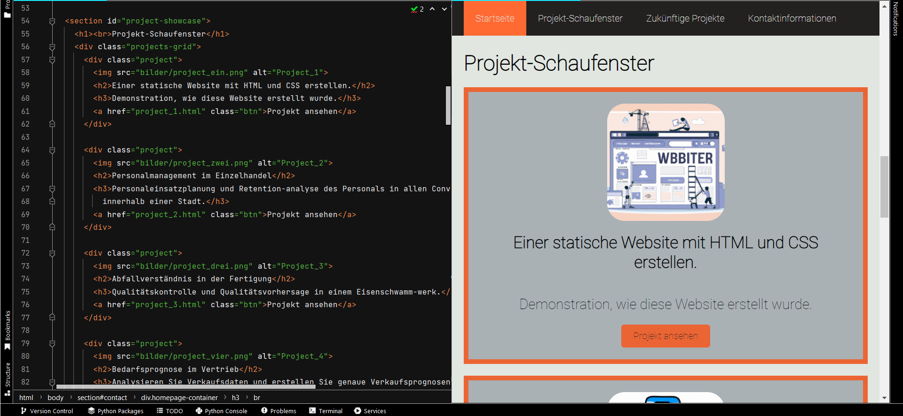

Erstellung einer statischen Website mit HTML und CSS:
Eine Demonstration, wie diese Website erstellt wurde, wie HTML und CSS zusammenarbeiten, wie man verschiedene
Elemente hinzufügt (wie Navigationsleisten, Bilder, Videos, Links, usw.) und wie man Python-Skripte innerhalb
einer Webseite ausführt.
Der effektivste Weg, um mit einer Anwendung zu interagieren, eine Dienstleistung zu bewerben oder die
Arbeit eines Programmierers über eine gut gestaltete Portfolio-Website zu präsentieren, ist das Internet.
Vor dem Aufkommen benutzerfreundlicher Website-Baukästen wie SquareSpace und anderer „No-Code“-Plattformen
wurden die meisten Online-Inhalte mit Programmiersprachen erstellt, um die Struktur und das Layout einer
Website zu gestalten.
Eine statische Website, die keine serverseitigen Skripte oder Datenbankinteraktionen erfordert, besteht aus
einfachen HTML-, CSS- und sogar JavaScript-Dateien, die direkt im Browser des Benutzers angezeigt werden.
Aus diesem Grund möchte ich für dieses Projekt eine kleine Demonstration erstellen, wie man eine statische
Website mit HTML und CSS erstellt, indem man die folgenden Schritte befolgt:
1. Die Struktur und den Inhalt der Website planen. 2. HTML-Code schreiben, um den Inhalt zu organisieren und Element wie Überschriften, Absätze,
Schaltflächen und Links sowie visuelle Elemente wie Bilder und Videos einzufügen. 3. CSS-Code anwenden, um die Website zu gestalten, indem das Layout, die Farben, die Schriftarten und
andere gestalterische Aspekte angepasst werden, die dazu beitragen, bestimmte Aspekte der Website
hervorzuheben. 4. Kombination von HTML- und CSS-Elementen für jede Seite Ihrer Website durch korrekte Verknüpfung der
einzelnen Elemente innerhalb der gesamten Website-Domain. 5. Die erforderlichen Dateien auf einen Webserver oder Hosting-Dienst hochladen, um Ihre Website
öffentlich zugänglich und verfügbar zu machen.
HTML-Dateien bestehen aus "Tags", die die Struktur und den Inhalt einer Webseite definieren. Jeder dieser
"Tags" hat festgelegte Funktionen und Aufgaben. Einige der wichtigsten "Tags" sind die folgenden:
<html>: Ist das Stammelement eines HTML-Dokuments. Alle anderen "Tags" sind in diesem "Tag"
enthalten.
<head>: Dieser "Tag" enthält Metadaten, die für die Website relevant sind, aber nicht im
Browserfenster angezeigt werden, wie z. B. den Titel der Seite, Suchmaschinen-Keywords, externe Dateien und
andere Arten von Metadaten.
<body>: Dieser "Tag" enthält den Inhalt des HTML-Dokuments, der im Browserfenster angezeigt wird.
<header>: Enthält in der Regel das Hauptmenü oder sogar das Logo einer Webseite.
<main>: Dieser "Tag" enthält den Hauptinhalt der Webseite.
<section>: Dieser "Tag" steht für einen einzigartigen Abschnitt einer Webseite, der sich von anderen
Abschnitten unterscheidet. Er wird in der Regel durch eine ID bestimmt, die durch CSS-Attribute ergänzt
wird und verschiedene Arten von Elementen wie Text, Bilder, Videos und Code enthalten kann.
Um eine funktionale und optisch ansprechende Navigationsleiste zu erstellen, sind sowohl HTML- als auch
CSS-Code erforderlich, um nicht nur die Position, Struktur und Links zu anderen HTML-Seiten innerhalb des
<nav>-"Tags" hinzuzufügen, sondern auch die Schriftart, das Farbschema und einzigartige
CSS-Interaktionen wie eine Hover-Funktion. HTML bestimmt, wie viele Abschnitte enthalten sein sollen und
ob Links zu anderen Seiten oder Abschnitten einer Seite gesetzt werden sollen.
Das <nav>-"Tag" in der HTML-Datei kann mit CSS-Code gekoppelt werden, um zusätzliche Funktionen
hinzuzufügen. CSS kann mithilfe eines <style>-"Tags" in HTML eingebettet oder über das <link>-"Tag" im
<head>-Bereich extern verknüpft werden. Zu den CSS-Eigenschaften für <nav> können Textausrichtung,
Hintergrundfarbe und Anzeigeoptionen gehören.
Die CSS-Komponente für das <nav>-"Tag" kann entweder direkt in der HTML-Datei mit dem <style>
-"Tag" geschrieben werden, oder Sie können mit dem <link>-"Tag" im <head>-Bereich der
HTML-Datei auf eine externe CSS-Datei verweisen.
In beiden Fällen kann das <nav>-"Tag" in CSS so konfiguriert werden, dass es Attribute wie
Textausrichtung, Hintergrundfarbe, Anzeigeeinstellungen und vieles mehr enthält.
nav a {
color: #E1E6E1;
text-decoration: none;
text-align: center;
padding: 20px;
}
nav a:hover {
background-color: #F24236;
color: #232020;
}

Um Medien wie Bilder oder Videos hinzuzufügen, verwendet der <img>-"Tag" das Attribut „src“, um den
Dateipfad des Bildes zu definieren, und das Attribut „alt“, um eine Beschreibung des angezeigten Inhalts
bereitzustellen.
Insgesamt kann der <img>-"Tag" durch CSS-Komponenten verbessert werden, um ihn optisch ansprechender
zu gestalten, indem Rahmen, Schatten, Filter und Effekte geändert werden oder er sogar an die Größe des
Bildschirms des Benutzers angepasst wird.
# HTML CODE <img src="bilder/project_ein1.png" alt="Project screenshot">
Andererseits verfügt das <video>-"Tag" über HTML-Attribute wie „controls“, das angibt, dass
Videokontrollen angezeigt werden sollen, „playsinline“, das angibt, dass das Video innerhalb des Elements
abgespielt werden soll, sowie weitere Attribute wie „width“, „height“, ‚loop‘ und „muted“.
HINWEIS: Der <video>-"Tag" unterstützt die globalen und Ereignisattribute in HTML, die auch für
Audioinhalte verwendet werden können, anstatt dass der <video>-"Tag" möglicherweise eine angemessenere
Benutzererfahrung bietet.
Auf einer Portfolio-Website ist es sehr wichtig, dass die Kontaktseite Links zu anderen Social-Media-Seiten
wie LinkedIn, GitHub usw. enthält. Im Falle eines LinkedIn-Profils reichen ein 'href'- und ein
'target'-Attribut aus. ‚href‘ definiert die URL, auf die der Hyperlink verweist, während
„target“ angibt, wo die verlinkte URL angezeigt werden soll (_blank: bedeutet einen neuen Tab).
Um Attribute sowohl zum Container auf der Kontaktseite (Logos) als auch zum Bild selbst (Logo)
hinzuzufügen, muss für beide ein CSS-Segment hinzugefügt werden, damit nicht nur die Platzierung der
Bilder, sondern auch das Verhalten des Bildes an seiner Position festgelegt werden kann.
import numpy as np
from pyscript import display
import matplotlib.pyplot as plt
x1 = np.random.rand(80)
y1 = np.random.rand(80)
x2 = np.random.rand(80)
y2 = np.random.rand(80)
fig, ax = plt.subplots()
ax.scatter(x1, y1, color='green', label='First set')
ax.scatter(x2, y2, color='olive', label='Second set')
ax.set_title('MATPLOTLIB GRAPH using PyScript')
ax.set_xlabel('Great for data visualization')
ax.set_ylabel('Adaptable to most Machine Learning packages')
display(fig, target="plot-container")
PyScript ist ein Python-Framework, mit dem Sie Python-Code innerhalb einer Webseite nur mit einer
HTML-Datei ausführen können. PyScript ist besonders nützlich für Programmierer, die mit JavaScript nicht
vertraut sind, und dient als praktikable Alternative zu dem, was normalerweise mit der Programmiersprache
JavaScript erledigt wird. Damit lassen sich wesentlich komplexere Webseiten erstellen, die mit Datenbanken
interagieren, Grafiken generieren oder serverseitige Aufgaben innerhalb dynamischer Websites ausführen.
PyScript kann gängige Python-Module importieren und Python-Code nahtlos innerhalb einer HTML-Datei
ausführen, indem es einfach eine Verknüpfung zu pyscript.net herstellt und die entsprechenden
Bibliothekspakete importiert, wodurch Funktionen verfügbar werden, die sonst nur in Python verfügbar sind.
HINWEIS: PyScript hat noch einige Einschränkungen und kann nicht alle Python-Bibliotheken ausführen.
Es unterstützt jedoch weiterhin äußerst nützliche Pakete für die Visualisierung und Datenverarbeitung wie
NumPy, pandas, scikit-learn und matplotlib.
# HTML CODE <py-config>
packages = ["numpy", "pandas", "matplotlib"]
<py-config>
# Python CODE <py-script>
import numpy as np
def test_button():
n_array = [1,2,3,4,5,6,7,8]
n_random = [np.random.choice(n_array) for _ in range(6)]
display(n_random, append=False, target="test_id")
<py-script>
import numpy as np
def test_button():
n_array = [1,2,3,4,5,6,7,8]
n_random = [np.random.choice(n_array) for _ in range(6)]
display(n_random, append=False, target="test_id")
Dank PyScript ist es einfacher, Daten mit Python-Tools zu visualisieren, um komplexe Informationen
zu erklären und Muster, Trends oder Ausreißer zu veranschaulichen. PyScript ist insgesamt nützlich, um
dynamische Ergebnisse aus projektspezifischen Ausgaben anzuzeigen.
Als kurze Demonstration: Die folgende Schaltfläche generiert ein NumPy-Array mit Zufallszahlen von 1 bis 8
unter Verwendung des zuvor angezeigten Python-Codes.
FAZIT: Die Erstellung einer statischen Website mit HTML und CSS bietet eine kreative
Möglichkeit, ein Programmierportfolio zu präsentieren, sodass Programmierer wie ich die Fähigkeiten zeigen
können, die ich im Laufe meiner Karriere als Datenanalyst entwickelt habe.
Aus diesem Grund hilft mir ein Programmierportfolio dabei, verschiedene Datenanalysetechniken in den
Bereichen Datenbereinigung, Visualisierung und statistische Analyse zu präsentieren. All dies mit dem Ziel,
die Auswirkungen hervorzuheben, die datengestützte Entscheidungen in jeder Branche haben können.
Darüber hinaus dient ein Coding-Portfolio als Nachweis für meine Erfahrung in der Entwicklung und
Implementierung von Vorhersagemodellen, statistischen Algorithmen und Techniken des maschinellen Lernens.
Insgesamt sollte jeder Entwickler datenorientierter Produkte eine Plattform bereitstellen, um sein
Fachwissen zu präsentieren und seine Problemlösungs- und technischen Fähigkeiten über eine einfach zu
verwaltende Oberfläche zu demonstrieren. Darüber hinaus sind statische Websites leichtgewichtig, einfacher
zu warten und schnell zu laden. So wird eine gute Benutzererfahrung für Besucher gewährleistet.